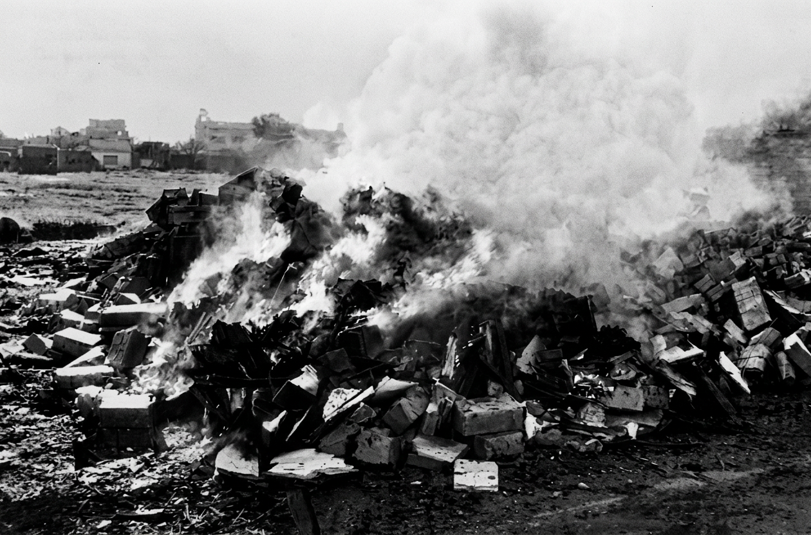

Una historia que merece ser recordada
El 29 de abril de 1976, en Córdoba, el Tercer Cuerpo de Ejército quemó públicamente cientos de libros retirados de librerías, bibliotecas y casas particulares. Fue uno de los actos de censura cultural más contundentes de la última dictadura argentina.
Libros bajo fuego es una experiencia web interactiva que reconstruye ese episodio a través de archivo histórico, fotografías, documentos y una trivia pensada para poner a prueba lo que sabés sobre la censura durante la dictadura. Cada clic abre una fuente primaria: notas de prensa, mapas de centros clandestinos, testimonios en audio y video.
No es solo un sitio para mirar: es un espacio para explorar, cuestionar y recordar. Pensado para estudiantes, docentes e investigadores, invita a entender por qué, cuando un Estado decide qué no debe leerse, la memoria se vuelve un acto de resistencia.

Recorré la experiencia completa y sumate a la conversación sobre memoria, verdad y justicia.
Visitar el sitio →